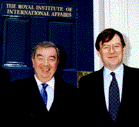

Sir Timothy Garden Director, Royal Institute of International Affairs Tim Garden was born in 1944 and joined the Royal Air Force as a university cadet while at St Catherine's College, Oxford University reading Physics. He was a member of Oxford University Air Squadron from 1962 to 1965. He was a squadron pilot on Canberra light bombers in Germany before becoming a flying instructor on Jet Provosts. He has commanded a jet flying training unit, a Vulcan bomber squadron and a helicopter base. He completed his staff training with the Army, and did a postgraduate International Relations degree at Magdalene College Cambridge. He spent three years as the Director of Defence Studies for the Royal Air Force, lecturing internationally on strategic studies. He was then appointed as station commander of RAF Odiham, where he flew Puma and Chinook helicopters. He then spent six years at the Ministry of Defence on both the air and central staffs, including a period on the Air Force Board as Assistant Chief of the Air Staff. His last MOD appointment was as Assistant Chief of the Defence Staff(Programmes) with responsibility for long term defence programme planning for all three Services. He was subsequently appointed to be Commandant of the Royal College of Defence Studies and was in post for the 1994 and 1995 courses. He retired from the RAF in April 1996 as an Air Marshal. He was appointed as Director of the Royal Institute of International Affairs at Chatham House, London in January 1997.
He has written widely on security topics, and his publications include two books: Can Deterrence Last? and The Technology Trap . He is currently producing a revised edition of The Technology Trap, and a new book on the future of armed forces.
He is an Honorary Fellow of St Catherine's College Oxford, a Fellow of the Royal Aeronautical Society, a Fellow of the Royal United Services Institute, a member of the International Institute for Strategic Studies and a member of the Institute of Directors. He is a member of the DERA Analysis Board, the World Economic Forum Global Issues Group, and of advisory boards to the University of Hull Centre for Security Studies, the NATO Defense College in Rome, the Association of Pathfinders, Asia House, the Köenigswinter Conference, and the Cambridge University Centre of International Sudies. He is a Council Member of the Academic Study Group on Israel and the Middle East; a director of the UK-Japan 2000 Group and of the Asia-Pacific Technology Network; and a Trustee of the World Humanity Action Trust. He was made an Honorary Fellow of the US Foreign Policy Association in 1997. He is a member of the General Committee of the National Liberal Club.
He retains his connections with the RAF as President of London & South East Region Air Training Corps, and as Hon Vice President of the RAF Rowing Club. He is a Liveryman of the Guild of Air Pilots and Air Navigators, Chairman of the RAF Oxford & Cambridge Society, and is also a member of the Air League.
He was appointed a CB in 1992 and received his knighthood in 1994.
His wife, Sue, is the Senior Awards Manager at the City & Guilds of London Institute. They have two graduate daughters: the elder is an engineer and the younger is now undertaking teacher training.
Foreign Minister Primakov with Sir Timothy
{kind=link}